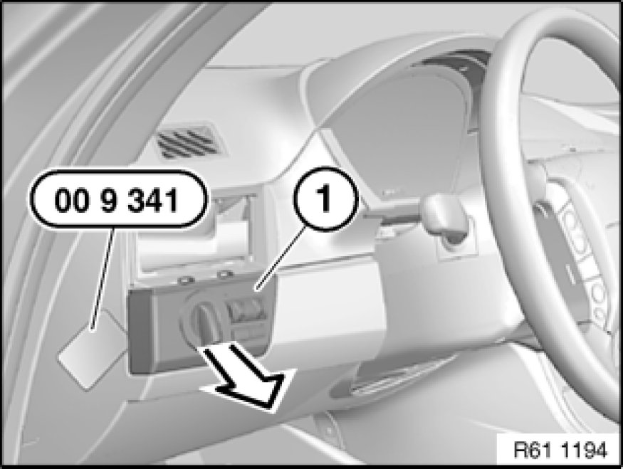

Headlamp Switch: Service and Repair
61 31 037 - Removing and installing/replacing light control unit

Special tools required:
- 00 9 341

Necessary preliminary tasks:
- Remove left fresh-air grill Removing and Installing or Replacing Left Fresh-Air Grille

Fit special tool 00 9 341 at side as illustrated.
Lever out lighting control unit (1) all round.
Unlock and disconnect associated plug connection, remove lighting control unit (1) in direction of arrow.
Replacement:
If necessary, remove felt strip (1) from instrument panel (2).
Installation:
Make sure lighting control unit is correctly seated in instrument panel (2).